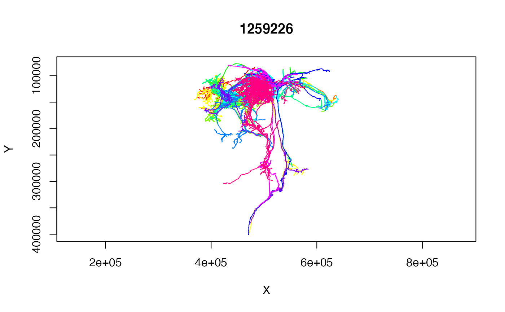

vignettes/connecting-to-virtual-fly-brain.Rmd
connecting-to-virtual-fly-brain.RmdThe Virtual Fly Brain project runs several public CATMAID servers that you can access without any access tokens. This quick example shows you how to access them.
##
## Attaching package: 'dplyr'## The following objects are masked from 'package:stats':
##
## filter, lag## The following objects are masked from 'package:base':
##
## intersect, setdiff, setequal, union## Loading required package: httr## Loading required package: nat## Loading required package: rgl## Registered S3 method overwritten by 'nat':
## method from
## as.mesh3d.ashape3d rgl##
## Attaching package: 'nat'## The following object is masked from 'package:rgl':
##
## wire3d## The following objects are masked from 'package:dplyr':
##
## intersect, setdiff, union## The following objects are masked from 'package:base':
##
## intersect, setdiff, unionThe vfbcatmaid()
function provides a convenient way to connect to those servers.
fafb=vfbcatmaid(dataset = 'fafb')
fafbal=catmaid_get_annotationlist(conn = fafb)
fafbal$annotations %>%
filter(grepl("^Paper", name))## id name num_users_annotation
## 1 11490509 Paper: Zheng et al 2018 1
## 2 12823574 Paper: Felsenberg et al 2018 1
## 3 13040382 Paper: Dolan and Belliart-Guérin et al. 2018 1
## 4 13500459 Paper: Sayin et al 2019 1
## 5 14896682 Paper: Kim et al 2020 1
## 6 15549507 Paper: Zheng et al 2020 1
## 7 15579831 Paper: Marin et al 2020 3
## 8 15754279 Paper: Bates and Schlegel et al 2020 2
## 9 15754283 Paper: Dolan et al 2019 1
## 10 15754388 Paper: Otto et al 2020 2
## 11 15981708 Paper: Coates et al 2020 1
## 12 16232065 Paper: Turner-Evans et al 2020 1
## 13 16337677 Paper: Wang et al 2020b 1
## 14 16337827 Paper: Wang et al 2020a 1
## 15 16830656 Paper: Wang et al 2020c 1
## 16 16830912 Paper: Morimoto et al 2020 1
## 17 16857700 Paper: Hampel and Eichler et al 2020 1
## 18 17515091 Paper: Baltruschat et al 2021 1
## 19 17673199 Paper: Kind et al 2021 1
wang2020a=read.neurons.catmaid('Paper: Wang et al 2020a')## Warning in somapos.catmaidneuron(swc = swc, tags = res$tags): Ambiguous points
## tagged as soma in neuron: . Using first
plot(wang2020a, WithNodes=F)
You could do a 3D plot of those neurons